pak::pkg_install("rpact-com/rpact@dev/qtd", upgrade = TRUE)Quantitative Trial Decisions for Means and Rates with rpact
2026-11-06
Source:vignettes/rpact_quantitative_trial_design.qmd
Introduction
A development decision often depends on two questions: is the treatment effect sufficiently promising relative to a minimum acceptable difference, and could it reach a target difference? Quantitative trial design (QTD) makes these requirements explicit and calculates the probabilities of the resulting decisions under specified trial assumptions.
This vignette demonstrates the QTD functions in rpact for two independent groups with continuous endpoints (Means) and binary endpoints (Rates). Rates here are event probabilities, rather than event counts per unit of exposure. We define a decision rule, inspect its output, calculate operating characteristics, and illustrate every QTD plot type, including sensitivity and weighted decision-performance displays.
The examples in this vignette were inspired by a presentation by Björn Bornkamp and David Ohlssen on quantitative trial design. The worked example uses the fictional project name Kestrel. All decision rules, planning assumptions, and numerical results needed to follow the examples are provided below.
The examples require the QTD development version of rpact providing getDesignQuantitative(), getOperatingCharcteristicsMeans(), and getOperatingCharcteristicsRates(), together with their QTD print, summary, and plot methods. The spelling Charcteristics follows the current function names.
How to install the QTD development version
Defining a Quantitative Decision Rule
Reference values and percentiles
| Argument | Interpretation | Default |
|---|---|---|
targetValue |
Target value (TV), also called target difference (TD) | Required |
lowerReferenceValue |
Lower reference value (LRV), also called minimum acceptable difference (MAD) | Required |
lowerPercentile |
Percentile defining the lower interval limit | 0.2 |
upperPercentile |
Percentile defining the upper interval limit | 0.9 |
Use reference values on a scale on which larger effects are beneficial, with LRV no larger than TV. The percentiles satisfy . For a normally approximated effect estimate with standard error , the limits are
These are percentile-specific frequentist bounds. The 20th and 90th percentiles do not describe a symmetric 90% confidence interval and are not posterior quantiles.
binaryRule <- getDesignQuantitative(
targetValue = 0,
lowerReferenceValue = -0.05,
lowerPercentile = 0.2,
upperPercentile = 0.9
)
print(binaryRule)Design parameters and output of quantitative trial design (decision rule)
User defined parameters
- Target value: 0
- Lower reference value: -0.05
Default parameters
- Upper percentile: 0.9000
- Lower percentile: 0.2000
summary(binaryRule)Quantitative trial design (decision rule)
Fixed quantitative trial decision rule.
- Target value: 0
- Lower reference value: -0.050
- Upper percentile: 0.9000
- Lower percentile: 0.2000
For a harmful binary outcome we will use . Thus, LRV = allows an increase of up to five percentage points in the treatment event probability, and TV = represents equal event probabilities.
Three and six decision categories
The main criteria are and . Meeting both gives Go, meeting one gives Indeterminate, and meeting neither gives Stop. The six-category view distinguishes particularly strong evidence and the two reasons for an indeterminate decision.
| Six-category decision | Interval configuration | Three-category decision |
|---|---|---|
| Go (Fixed) | Go | |
| Go | and | Go |
| Indeterminate 1 | and | Indeterminate |
| Indeterminate 2 | and | Indeterminate |
| Stop | and | |
| Stop (Fixed) | Stop |
The implementation includes equality at the corresponding reference boundary as shown above. This matters for discrete data. “Fixed” identifies the extreme decision categories. How a team acts on the middle categories can also depend on the competitive situation and other evidence.
Calculations retain six exclusive category probabilities. plotCat = 3 adds the two Go, the two Indeterminate, and the two Stop probabilities for display; plotCat = 6 shows them separately. Rule plots default to six categories and OC plots to three.
The Kestrel Binary-Endpoint Example
Clinical setting and exact input assumptions
Consider a phase II study in de novo renal transplant recipients involving sotrastaurin (AEB071).1 Three experimental regimens and one active control regimen based on mycophenolic acid and tacrolimus are planned with 75 patients per group and 1:1:1:1 randomization. The QTD example compares either one experimental group or two pooled experimental groups against control. The comparisons therefore use 75 control versus 75 treatment patients and 75 control versus 150 treatment patients.
The endpoint is composite efficacy failure, so lower event probabilities are beneficial. The example addresses efficacy only; safety and the overall benefit-risk assessment are separate considerations. These are planning assumptions for this example, rather than reported outcomes of the public trial.
| Quantity | Value | rpact argument |
|---|---|---|
| Minimum acceptable difference | −5 percentage points | lowerReferenceValue = -0.05 |
| Target difference | 0 percentage points | targetValue = 0 |
| Lower / upper percentiles | 20% / 90% |
lowerPercentile = 0.2, upperPercentile = 0.9
|
| Control event probability | 15% | pi2 = 0.15 |
| Treatment event-probability range | 10% to 25% | pi1 = seq(0.10, 0.25, by = 0.001) |
| Sample sizes, control then treatment | (75, 75), (75, 150) | Two rows of numberOfSubjects
|
| Beneficial direction | Lower treatment rate | directionUpper = FALSE |
| Interval construction | QTD1 | intervalMethod = "qtd1" |
We evaluate treatment event probabilities from 0.10 to 0.25 in steps of 0.001 for both sample-size scenarios. Rates and reference differences are entered as proportions, so five percentage points are entered as 0.05.
demoSizes <- matrix(
c(75, 75, 75, 150),
ncol = 2,
byrow = TRUE,
dimnames = list(NULL, c("control", "treatment"))
)
ratesOC <- getOperatingCharcteristicsRates(
design = binaryRule,
numberOfSubjects = demoSizes,
pi1 = seq(0.10, 0.25, by = 0.001),
pi2 = 0.15,
directionUpper = FALSE,
intervalMethod = "qtd1"
)numberOfSubjects is a positive integer matrix with control in column 1 and treatment in column 2. Each row is a scenario. pi1 is a vector of treatment event probabilities in and pi2 is a single control event probability in . The constructor requires design, numberOfSubjects, pi1, and pi2. Its optional arguments are directionUpper = TRUE and intervalMethod = "qtd1"; this example explicitly reverses the direction. Additional arguments in ... are checked for unknown names.
With directionUpper = TRUE, the beneficial risk difference is pi1 - pi2; with FALSE, it is pi2 - pi1. The returned alternative field uses that beneficial direction. Exact binomial summation over all possible event-count pairs produces the category probabilities. The interval construction itself remains approximate.
The five named scenarios
scenarioNames <- c("Very good", "Good", "Indifferent", "Poor", "Very poor")
improvements <- c(0.05, 0, -0.025, -0.05, -0.10)
scenarioRates <- c(0.10, 0.15, 0.175, 0.20, 0.25)
knitr::kable(data.frame(
Scenario = scenarioNames,
`True improvement (percentage points)` = 100 * improvements,
`Treatment event probability` = scenarioRates,
check.names = FALSE
))| Scenario | True improvement (percentage points) | Treatment event probability |
|---|---|---|
| Very good | 5.0 | 0.100 |
| Good | 0.0 | 0.150 |
| Indifferent | -2.5 | 0.175 |
| Poor | -5.0 | 0.200 |
| Very poor | -10.0 | 0.250 |
ratesScenarios <- getOperatingCharcteristicsRates(
design = binaryRule,
numberOfSubjects = demoSizes,
pi1 = scenarioRates,
pi2 = 0.15,
directionUpper = FALSE,
intervalMethod = "qtd1"
)
summary(ratesScenarios, digits = 4)Operating-characteristics for comparing rates
Decision rule
- Target value: 0
- Lower reference value: -0.0500
- Upper percentile: 0.90000
- Lower percentile: 0.20000
Assumptions
- Treatment groups: 2
- Assumed control rate: 0.15000
- Direction upper: FALSE
- Interval method: qtd1
Number of subjects (control = 75, treatment = 75)
| Assumed treatment rate | Alternatives | Go (Fixed) | Go | Indeterminate 1 | Indeterminate 2 | Stop | Stop (Fixed) | |
|---|---|---|---|---|---|---|---|---|
| 1 | 0.10000 | 0.0500 | 0.53523 | 0.31322 | 0.13835 | <0.00001 | 0.01232 | 0.00087 |
| 2 | 0.15000 | 0.0000 | 0.20378 | 0.30435 | 0.39130 | <0.00001 | 0.08433 | 0.01624 |
| 3 | 0.17500 | -0.0250 | 0.10671 | 0.22678 | 0.47114 | <0.00001 | 0.15094 | 0.04444 |
| 4 | 0.20000 | -0.0500 | 0.05023 | 0.14692 | 0.48221 | 0 | 0.22241 | 0.09822 |
| 5 | 0.25000 | -0.1000 | 0.00831 | 0.04384 | 0.34338 | 0 | 0.30655 | 0.29792 |
Number of subjects (control = 75, treatment = 150)
| Assumed treatment rate | Alternatives | Go (Fixed) | Go | Indeterminate 1 | Indeterminate 2 | Stop | Stop (Fixed) | |
|---|---|---|---|---|---|---|---|---|
| 1 | 0.10000 | 0.0500 | 0.59475 | 0.32018 | 0.07488 | <0.00001 | 0.00987 | 0.00032 |
| 2 | 0.15000 | 0.0000 | 0.19872 | 0.37202 | 0.33095 | 0 | 0.08686 | 0.01145 |
| 3 | 0.17500 | -0.0250 | 0.09206 | 0.27165 | 0.43117 | 0 | 0.16723 | 0.03789 |
| 4 | 0.20000 | -0.0500 | 0.03674 | 0.16258 | 0.44665 | 0 | 0.25795 | 0.09608 |
| 5 | 0.25000 | -0.1000 | 0.00387 | 0.03559 | 0.27701 | 0 | 0.34143 | 0.34210 |
The next table gives a compact probability overview for the five scenarios. Triplets are ordered Go / Indeterminate / Stop.
| Scenario | True improvement | 75 control / 75 treatment | 75 control / 150 treatment |
|---|---|---|---|
| Very good | 5% | 0.85 / 0.14 / 0.01 | 0.91 / 0.07 / 0.01 |
| Good | 0% | 0.51 / 0.39 / 0.10 | 0.57 / 0.33 / 0.10 |
| Indifferent | −2.5% | 0.33 / 0.47 / 0.20 | 0.36 / 0.43 / 0.21 |
| Poor | −5% | 0.20 / 0.48 / 0.32 | 0.20 / 0.45 / 0.35 |
| Very poor | −10% | 0.05 / 0.34 / 0.60 | 0.04 / 0.28 / 0.68 |
The compact overview uses limited precision and is not renormalized; some triplets sum to 0.99. Use the calculated table below for numerical comparisons: it reports the QTD1 probabilities to six decimal places under the same assumptions.
scenarioPlot <- plot(ratesScenarios, type = 4, plotCat = 3)
scenarioTable <- reshape(
scenarioPlot$data[c("scenario", "nControl", "nTreatment",
"pi1", "alternative", "category", "probability")],
idvar = c("scenario", "nControl", "nTreatment", "pi1", "alternative"),
timevar = "category",
direction = "wide"
)
scenarioTable <- scenarioTable[order(scenarioTable$scenario,
match(scenarioTable$pi1, scenarioRates)), ]
scenarioTable$Scenario <- scenarioNames[match(scenarioTable$pi1, scenarioRates)]
knitr::kable(
scenarioTable[c("Scenario", "nControl", "nTreatment", "pi1", "alternative",
"probability.Go", "probability.Indeterminate", "probability.Stop")],
digits = 6,
row.names = FALSE
)| Scenario | nControl | nTreatment | pi1 | alternative | probability.Go | probability.Indeterminate | probability.Stop |
|---|---|---|---|---|---|---|---|
| Very good | 75 | 75 | 0.100 | 0.050 | 0.848456 | 0.138351 | 0.013193 |
| Good | 75 | 75 | 0.150 | 0.000 | 0.508129 | 0.391300 | 0.100571 |
| Indifferent | 75 | 75 | 0.175 | -0.025 | 0.333489 | 0.471137 | 0.195375 |
| Poor | 75 | 75 | 0.200 | -0.050 | 0.197150 | 0.482215 | 0.320635 |
| Very poor | 75 | 75 | 0.250 | -0.100 | 0.052146 | 0.343377 | 0.604477 |
| Very good | 75 | 150 | 0.100 | 0.050 | 0.914933 | 0.074880 | 0.010187 |
| Good | 75 | 150 | 0.150 | 0.000 | 0.570745 | 0.330946 | 0.098309 |
| Indifferent | 75 | 150 | 0.175 | -0.025 | 0.363709 | 0.431172 | 0.205119 |
| Poor | 75 | 150 | 0.200 | -0.050 | 0.199319 | 0.446646 | 0.354035 |
| Very poor | 75 | 150 | 0.250 | -0.100 | 0.039460 | 0.277009 | 0.683531 |
For a five-percentage-point improvement, the Go probability is approximately 0.848456 with 75 patients per group and 0.914933 with 75 control and 150 treatment patients. At equal event rates, these probabilities are approximately 0.508129 and 0.570745. Go under this rule therefore does not imply rejection of a conventional superiority null hypothesis.
Detailed probability tables
The following table summarizes the three-category probabilities for treatment event probabilities from 0.10 to 0.24 in steps of 0.02.
| Control N | Treatment N | Control rate | Treatment rate | Go | Indeterminate | Stop |
|---|---|---|---|---|---|---|
| 75 | 75 | 0.15 | 0.10 | 0.8485 | 0.1384 | 0.0132 |
| 75 | 75 | 0.15 | 0.12 | 0.7278 | 0.2383 | 0.0339 |
| 75 | 75 | 0.15 | 0.14 | 0.5831 | 0.3442 | 0.0728 |
| 75 | 75 | 0.15 | 0.16 | 0.435 | 0.4307 | 0.1343 |
| 75 | 75 | 0.15 | 0.18 | 0.3026 | 0.479 | 0.2183 |
| 75 | 75 | 0.15 | 0.20 | 0.1971 | 0.4822 | 0.3206 |
| 75 | 75 | 0.15 | 0.22 | 0.1208 | 0.4454 | 0.4337 |
| 75 | 75 | 0.15 | 0.24 | 0.0699 | 0.3812 | 0.5489 |
| 75 | 150 | 0.15 | 0.10 | 0.9149 | 0.0749 | 0.0102 |
| 75 | 150 | 0.15 | 0.12 | 0.8065 | 0.164 | 0.0295 |
| 75 | 150 | 0.15 | 0.14 | 0.6552 | 0.276 | 0.0688 |
| 75 | 150 | 0.15 | 0.16 | 0.4854 | 0.3793 | 0.1353 |
| 75 | 150 | 0.15 | 0.18 | 0.3263 | 0.4417 | 0.232 |
| 75 | 150 | 0.15 | 0.20 | 0.1993 | 0.4466 | 0.354 |
| 75 | 150 | 0.15 | 0.22 | 0.1112 | 0.3996 | 0.4892 |
| 75 | 150 | 0.15 | 0.24 | 0.057 | 0.3209 | 0.6222 |
The full probability grid begins at pi1 = 0.100 with step 0.001. For 75 patients per group at pi1 = 0.100, the six-category probabilities are approximately 0.535233, 0.313223, 0.138351, 0, 0.01232, and 0.000873, with aggregate probabilities 0.848456, 0.138351, and 0.013193. Small displayed zeros can represent rounded positive probabilities. The following calculation shows the first grid points and their three-category sums from unrounded results.
visibleRows <- subset(ratesOC$probabilities,
nTreatment == 75 & pi1 >= 0.100 & pi1 <= 0.112)
visibleTable <- reshape(
visibleRows[c("pi1", "pi2", "nControl", "nTreatment", "category", "probability")],
idvar = c("pi1", "pi2", "nControl", "nTreatment"),
timevar = "category",
direction = "wide"
)
visibleTable <- visibleTable[order(visibleTable$pi1), ]
visibleTable$Go <- visibleTable[["probability.Go (Fixed)"]] +
visibleTable$probability.Go
visibleTable$Indeterminate <- visibleTable[["probability.Indeterminate 1"]] +
visibleTable[["probability.Indeterminate 2"]]
visibleTable$Stop <- visibleTable$probability.Stop +
visibleTable[["probability.Stop (Fixed)"]]
knitr::kable(visibleTable, digits = 6, row.names = FALSE)| pi1 | pi2 | nControl | nTreatment | probability.Go (Fixed) | probability.Go | probability.Indeterminate 1 | probability.Indeterminate 2 | probability.Stop | probability.Stop (Fixed) | Go | Indeterminate | Stop |
|---|---|---|---|---|---|---|---|---|---|---|---|---|
| 0.100 | 0.15 | 75 | 75 | 0.535233 | 0.313223 | 0.138351 | 0 | 0.012320 | 0.000873 | 0.848456 | 0.138351 | 0.013193 |
| 0.101 | 0.15 | 75 | 75 | 0.527250 | 0.315997 | 0.142858 | 0 | 0.012953 | 0.000941 | 0.843247 | 0.142858 | 0.013894 |
| 0.102 | 0.15 | 75 | 75 | 0.519295 | 0.318648 | 0.147431 | 0 | 0.013612 | 0.001013 | 0.837944 | 0.147431 | 0.014625 |
| 0.103 | 0.15 | 75 | 75 | 0.511371 | 0.321175 | 0.152068 | 0 | 0.014296 | 0.001090 | 0.832546 | 0.152068 | 0.015386 |
| 0.104 | 0.15 | 75 | 75 | 0.503479 | 0.323577 | 0.156765 | 0 | 0.015008 | 0.001171 | 0.827056 | 0.156765 | 0.016179 |
| 0.105 | 0.15 | 75 | 75 | 0.495622 | 0.325851 | 0.161522 | 0 | 0.015746 | 0.001258 | 0.821473 | 0.161522 | 0.017004 |
| 0.106 | 0.15 | 75 | 75 | 0.487802 | 0.327999 | 0.166336 | 0 | 0.016512 | 0.001350 | 0.815801 | 0.166336 | 0.017863 |
| 0.107 | 0.15 | 75 | 75 | 0.480022 | 0.330017 | 0.171205 | 0 | 0.017307 | 0.001448 | 0.810039 | 0.171205 | 0.018755 |
| 0.108 | 0.15 | 75 | 75 | 0.472283 | 0.331907 | 0.176127 | 0 | 0.018131 | 0.001552 | 0.804190 | 0.176127 | 0.019683 |
| 0.109 | 0.15 | 75 | 75 | 0.464588 | 0.333667 | 0.181099 | 0 | 0.018985 | 0.001661 | 0.798255 | 0.181099 | 0.020647 |
| 0.110 | 0.15 | 75 | 75 | 0.456939 | 0.335296 | 0.186118 | 0 | 0.019869 | 0.001778 | 0.792235 | 0.186118 | 0.021647 |
| 0.111 | 0.15 | 75 | 75 | 0.449337 | 0.336796 | 0.191182 | 0 | 0.020784 | 0.001901 | 0.786133 | 0.191182 | 0.022685 |
| 0.112 | 0.15 | 75 | 75 | 0.441784 | 0.338166 | 0.196289 | 0 | 0.021731 | 0.002031 | 0.779949 | 0.196289 | 0.023761 |
Translating the rule into observed event counts
Suppose we observe 16 events among 75 control patients. With 75 treatment patients, the rule gives Go for 0–15 events, Indeterminate for 16–22, and Stop for 23–75. The QTD1 event-count map shows these decision regions.
eventMap <- plot(
binaryRule,
type = 3,
numberOfSubjects = c(75, 75),
directionUpper = FALSE,
intervalMethod = "qtd1",
observedControl = 16,
controlRate = 0.15,
treatmentRate = 0.10,
plotCat = 3
)
eventMap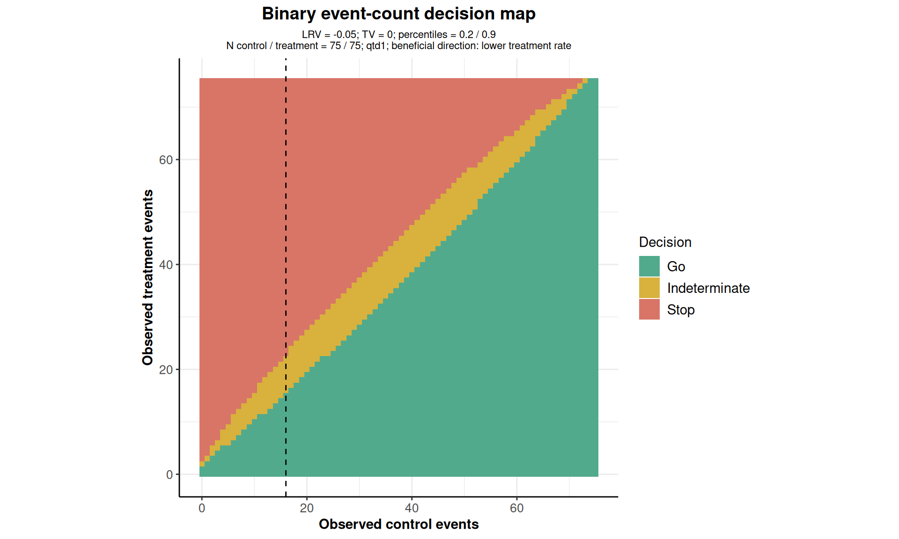
Here numberOfSubjects is a vector of length two, unlike the OC constructors’ matrix. observedControl adds the vertical line. Supplying controlRate and treatmentRate together adds joint binomial cell probabilities to the plot data without changing the decisions.
controlSlice <- subset(eventMap$data, eventsControl == 16)
observedRanges <- aggregate(eventsTreatment ~ category, controlSlice, range)
knitr::kable(data.frame(
Decision = observedRanges$category,
Minimum = observedRanges$eventsTreatment[, 1],
Maximum = observedRanges$eventsTreatment[, 2]
))| Decision | Minimum | Maximum |
|---|---|---|
| Go | 0 | 15 |
| Indeterminate | 16 | 22 |
| Stop | 23 | 75 |
aggregate(cellProbability ~ category, eventMap$data, sum) category cellProbability
1 Go 0.84845594
2 Indeterminate 0.13835067
3 Stop 0.01319339Aggregated cell probabilities are unconditional OC probabilities at the supplied true rates. The count ranges condition on the observed control count and should not be interpreted as those unconditional probabilities.
Continuous Endpoints: Means
The continuous-endpoint example concerns AFQ0562 and specifies MAD = 2.9, TD = 4, a 50th-percentile lower bound, and an 80th-percentile upper bound.
meansRule <- getDesignQuantitative(
targetValue = 4,
lowerReferenceValue = 2.9,
lowerPercentile = 0.5,
upperPercentile = 0.8
)
summary(meansRule)Quantitative trial design (decision rule)
Fixed quantitative trial decision rule.
- Target value: 4.000
- Lower reference value: 2.900
- Upper percentile: 0.8000
- Lower percentile: 0.5000
For the following calculations, we assume a common standard deviation of 6, mean differences from 0 to 6 in steps of 0.1, and sample-size pairs (25, 25), (50, 50), (75, 75), (25, 50), (50, 100), (75, 150). These assumptions are illustrative.
planningSizes <- matrix(
c(25, 25, 50, 50, 75, 75, 25, 50, 50, 100, 75, 150),
ncol = 2,
byrow = TRUE,
dimnames = list(NULL, c("control", "treatment"))
)
meansOC <- getOperatingCharcteristicsMeans(
design = meansRule,
numberOfSubjects = planningSizes,
normalApproximation = TRUE,
groups = 2,
alternative = seq(0, 6, by = 0.1),
stDev = 6
)Argument | Meaning and supported options | |:–|:–| |
design | Quantitativedecision rule | | numberOfSubjects | Positive integer matrix, one scenario per row, columns control then treatment | | normalApproximation | Must be TRUE in the current implementation | | groups | Must be 2 in the current implementation | | alternative | Vector of true mean differences, treatment minus control; default seq(0, 1, 0.2) | | stDev | Positive common within-group standard deviation; default 1 | | ... | Reserved additional arguments; no further QTD calculation options are used here |
The sampling standard error is . The normal sampling distribution of the estimated difference gives the six decision probabilities analytically. This calculation uses a specified common standard deviation rather than a t-distribution. Means has no directionUpper argument: formulate the endpoint so that larger differences represent greater benefit. At the lower percentile 0.5, and .
Printing, Summarizing, and Accessing Results
print() distinguishes user-defined, derived, and default parameters and displays the long-format probability table. The compact five-scenario object makes this output manageable.
print(ratesScenarios)Parameters and output of operating-characteristics for comparing rates
User defined parameters
- Number of subjects [1]: 75, 75
- Number of subjects [2]: 75, 150
- Assumed treatment rate: 0.100, 0.150, 0.175, 0.200, 0.250
- Assumed control rate: 0.150
- Direction upper: FALSE
Derived from user defined parameters
- Alternatives: 0.050, 0.000, -0.025, -0.050, -0.100
Default parameters
- Treatment groups: 2
- Interval method: qtd1
Output
| Category | Probability | Number of subjects (control) | Number of subjects (treatment) | Alternatives | Assumed treatment rate | Assumed control rate | |
|---|---|---|---|---|---|---|---|
| 1 | Go (Fixed) | 5.352327e-01 | 75 | 75 | 0.050 | 0.100 | 0.15 |
| 2 | Go (Fixed) | 2.037757e-01 | 75 | 75 | 0.000 | 0.150 | 0.15 |
| 3 | Go (Fixed) | 1.067077e-01 | 75 | 75 | -0.025 | 0.175 | 0.15 |
| 4 | Go (Fixed) | 5.023338e-02 | 75 | 75 | -0.050 | 0.200 | 0.15 |
| 5 | Go (Fixed) | 8.310520e-03 | 75 | 75 | -0.100 | 0.250 | 0.15 |
| 6 | Go | 3.132233e-01 | 75 | 75 | 0.050 | 0.100 | 0.15 |
| 7 | Go | 3.043533e-01 | 75 | 75 | 0.000 | 0.150 | 0.15 |
| 8 | Go | 2.267809e-01 | 75 | 75 | -0.025 | 0.175 | 0.15 |
| 9 | Go | 1.469166e-01 | 75 | 75 | -0.050 | 0.200 | 0.15 |
| 10 | Go | 4.383561e-02 | 75 | 75 | -0.100 | 0.250 | 0.15 |
| 11 | Indeterminate 1 | 1.383506e-01 | 75 | 75 | 0.050 | 0.100 | 0.15 |
| 12 | Indeterminate 1 | 3.913004e-01 | 75 | 75 | 0.000 | 0.150 | 0.15 |
| 13 | Indeterminate 1 | 4.711368e-01 | 75 | 75 | -0.025 | 0.175 | 0.15 |
| 14 | Indeterminate 1 | 4.822145e-01 | 75 | 75 | -0.050 | 0.200 | 0.15 |
| 15 | Indeterminate 1 | 3.433772e-01 | 75 | 75 | -0.100 | 0.250 | 0.15 |
| 16 | Indeterminate 2 | 6.447415e-08 | 75 | 75 | 0.050 | 0.100 | 0.15 |
| 17 | Indeterminate 2 | 2.235870e-09 | 75 | 75 | 0.000 | 0.150 | 0.15 |
| 18 | Indeterminate 2 | 3.442681e-10 | 75 | 75 | -0.025 | 0.175 | 0.15 |
| 19 | Indeterminate 2 | 4.756762e-11 | 75 | 75 | -0.050 | 0.200 | 0.15 |
| 20 | Indeterminate 2 | 6.683973e-13 | 75 | 75 | -0.100 | 0.250 | 0.15 |
| 21 | Stop | 1.232006e-02 | 75 | 75 | 0.050 | 0.100 | 0.15 |
| 22 | Stop | 8.432942e-02 | 75 | 75 | 0.000 | 0.150 | 0.15 |
| 23 | Stop | 1.509382e-01 | 75 | 75 | -0.025 | 0.175 | 0.15 |
| 24 | Stop | 2.224109e-01 | 75 | 75 | -0.050 | 0.200 | 0.15 |
| 25 | Stop | 3.065523e-01 | 75 | 75 | -0.100 | 0.250 | 0.15 |
| 26 | Stop (Fixed) | 8.733303e-04 | 75 | 75 | 0.050 | 0.100 | 0.15 |
| 27 | Stop (Fixed) | 1.624114e-02 | 75 | 75 | 0.000 | 0.150 | 0.15 |
| 28 | Stop (Fixed) | 4.443645e-02 | 75 | 75 | -0.025 | 0.175 | 0.15 |
| 29 | Stop (Fixed) | 9.822453e-02 | 75 | 75 | -0.050 | 0.200 | 0.15 |
| 30 | Stop (Fixed) | 2.979244e-01 | 75 | 75 | -0.100 | 0.250 | 0.15 |
| 31 | Go (Fixed) | 5.947519e-01 | 75 | 150 | 0.050 | 0.100 | 0.15 |
| 32 | Go (Fixed) | 1.987206e-01 | 75 | 150 | 0.000 | 0.150 | 0.15 |
| 33 | Go (Fixed) | 9.205907e-02 | 75 | 150 | -0.025 | 0.175 | 0.15 |
| 34 | Go (Fixed) | 3.674273e-02 | 75 | 150 | -0.050 | 0.200 | 0.15 |
| 35 | Go (Fixed) | 3.869971e-03 | 75 | 150 | -0.100 | 0.250 | 0.15 |
| 36 | Go | 3.201810e-01 | 75 | 150 | 0.050 | 0.100 | 0.15 |
| 37 | Go | 3.720240e-01 | 75 | 150 | 0.000 | 0.150 | 0.15 |
| 38 | Go | 2.716497e-01 | 75 | 150 | -0.025 | 0.175 | 0.15 |
| 39 | Go | 1.625763e-01 | 75 | 150 | -0.050 | 0.200 | 0.15 |
| 40 | Go | 3.558971e-02 | 75 | 150 | -0.100 | 0.250 | 0.15 |
| 41 | Indeterminate 1 | 7.488036e-02 | 75 | 150 | 0.050 | 0.100 | 0.15 |
| 42 | Indeterminate 1 | 3.309465e-01 | 75 | 150 | 0.000 | 0.150 | 0.15 |
| 43 | Indeterminate 1 | 4.311718e-01 | 75 | 150 | -0.025 | 0.175 | 0.15 |
| 44 | Indeterminate 1 | 4.466464e-01 | 75 | 150 | -0.050 | 0.200 | 0.15 |
| 45 | Indeterminate 1 | 2.770091e-01 | 75 | 150 | -0.100 | 0.250 | 0.15 |
| 46 | Indeterminate 2 | 9.126242e-09 | 75 | 150 | 0.050 | 0.100 | 0.15 |
| 47 | Indeterminate 2 | 1.591020e-11 | 75 | 150 | 0.000 | 0.150 | 0.15 |
| 48 | Indeterminate 2 | 4.410220e-13 | 75 | 150 | -0.025 | 0.175 | 0.15 |
| 49 | Indeterminate 2 | 9.714064e-15 | 75 | 150 | -0.050 | 0.200 | 0.15 |
| 50 | Indeterminate 2 | 2.480298e-18 | 75 | 150 | -0.100 | 0.250 | 0.15 |
| 51 | Stop | 9.867110e-03 | 75 | 150 | 0.050 | 0.100 | 0.15 |
| 52 | Stop | 8.685674e-02 | 75 | 150 | 0.000 | 0.150 | 0.15 |
| 53 | Stop | 1.672263e-01 | 75 | 150 | -0.025 | 0.175 | 0.15 |
| 54 | Stop | 2.579502e-01 | 75 | 150 | -0.050 | 0.200 | 0.15 |
| 55 | Stop | 3.414298e-01 | 75 | 150 | -0.100 | 0.250 | 0.15 |
| 56 | Stop (Fixed) | 3.196266e-04 | 75 | 150 | 0.050 | 0.100 | 0.15 |
| 57 | Stop (Fixed) | 1.145223e-02 | 75 | 150 | 0.000 | 0.150 | 0.15 |
| 58 | Stop (Fixed) | 3.789310e-02 | 75 | 150 | -0.025 | 0.175 | 0.15 |
| 59 | Stop (Fixed) | 9.608442e-02 | 75 | 150 | -0.050 | 0.200 | 0.15 |
| 60 | Stop (Fixed) | 3.421014e-01 | 75 | 150 | -0.100 | 0.250 | 0.15 |
summary() gives the rule and assumptions, followed by one table per sample-size scenario, with one row per input effect and six probability columns. Rates tables include treatment probability and beneficial risk difference.
meansScenarios <- getOperatingCharcteristicsMeans(
design = meansRule,
numberOfSubjects = demoSizes,
alternative = c(0, 2.9, 4, 6),
stDev = 6
)
summary(meansScenarios, digits = 4)Operating-characteristics for comparing means
Decision rule
- Target value: 4.0000
- Lower reference value: 2.9000
- Upper percentile: 0.80000
- Lower percentile: 0.50000
Assumptions
- Normal approximation: TRUE
- Treatment groups: 2
- Standard deviation: 6.0000
Number of subjects (control = 75, treatment = 75)
| Alternatives | Go (Fixed) | Go | Indeterminate 1 | Indeterminate 2 | Stop | Stop (Fixed) | |
|---|---|---|---|---|---|---|---|
| 1 | 0 | 0.00002 | 0.00057 | 0 | 0.00094 | 0.01554 | 0.98292 |
| 2 | 2.9000 | 0.13079 | 0.25855 | 0 | 0.11067 | 0.30000 | 0.20000 |
| 3 | 4.0000 | 0.50000 | 0.30000 | 0 | 0.06921 | 0.10604 | 0.02475 |
| 4 | 6.0000 | 0.97939 | 0.01864 | 0 | 0.00119 | 0.00075 | 0.00003 |
Number of subjects (control = 75, treatment = 150)
| Alternatives | Go (Fixed) | Go | Indeterminate 1 | Indeterminate 2 | Stop | Stop (Fixed) | |
|---|---|---|---|---|---|---|---|
| 1 | 0 | <0.00001 | 0.00005 | 0 | 0.00026 | 0.00468 | 0.99500 |
| 2 | 2.9000 | 0.09743 | 0.22722 | 0 | 0.17535 | 0.30000 | 0.20000 |
| 3 | 4.0000 | 0.50000 | 0.30000 | 0 | 0.10257 | 0.08117 | 0.01626 |
| 4 | 6.0000 | 0.99079 | 0.00852 | 0 | 0.00056 | 0.00013 | <0.00001 |
output selects "all" (default), "title", "overview", or "body". The OC overview contains the rule and assumptions; its body contains the tables. For a decision rule, the body contains its four parameters. digits controls display precision, following the summary settings rpact.summary.digits and rpact.summary.digits.probs, without changing stored probabilities.
summary(ratesScenarios, output = "title")Operating-characteristics for comparing rates
summary(ratesScenarios, output = "overview")Decision rule
- Target value: 0
- Lower reference value: -0.050
- Upper percentile: 0.9000
- Lower percentile: 0.2000
Assumptions
- Treatment groups: 2
- Assumed control rate: 0.1500
- Direction upper: FALSE
- Interval method: qtd1
summary(binaryRule, output = "body", digits = 4)- Target value: 0
- Lower reference value: -0.0500
- Upper percentile: 0.90000
- Lower percentile: 0.20000
Both the original object and its summary support Markdown for reports. The second expression embeds the summary tables directly into the document.
print(ratesScenarios)
summary(ratesScenarios, digits = 4)Operating-characteristics for comparing rates
Decision rule
- Target value: 0
- Lower reference value: -0.0500
- Upper percentile: 0.90000
- Lower percentile: 0.20000
Assumptions
- Treatment groups: 2
- Assumed control rate: 0.15000
- Direction upper: FALSE
- Interval method: qtd1
Number of subjects (control = 75, treatment = 75)
| Assumed treatment rate | Alternatives | Go (Fixed) | Go | Indeterminate 1 | Indeterminate 2 | Stop | Stop (Fixed) | |
|---|---|---|---|---|---|---|---|---|
| 1 | 0.10000 | 0.0500 | 0.53523 | 0.31322 | 0.13835 | <0.00001 | 0.01232 | 0.00087 |
| 2 | 0.15000 | 0.0000 | 0.20378 | 0.30435 | 0.39130 | <0.00001 | 0.08433 | 0.01624 |
| 3 | 0.17500 | -0.0250 | 0.10671 | 0.22678 | 0.47114 | <0.00001 | 0.15094 | 0.04444 |
| 4 | 0.20000 | -0.0500 | 0.05023 | 0.14692 | 0.48221 | 0 | 0.22241 | 0.09822 |
| 5 | 0.25000 | -0.1000 | 0.00831 | 0.04384 | 0.34338 | 0 | 0.30655 | 0.29792 |
Number of subjects (control = 75, treatment = 150)
| Assumed treatment rate | Alternatives | Go (Fixed) | Go | Indeterminate 1 | Indeterminate 2 | Stop | Stop (Fixed) | |
|---|---|---|---|---|---|---|---|---|
| 1 | 0.10000 | 0.0500 | 0.59475 | 0.32018 | 0.07488 | <0.00001 | 0.00987 | 0.00032 |
| 2 | 0.15000 | 0.0000 | 0.19872 | 0.37202 | 0.33095 | 0 | 0.08686 | 0.01145 |
| 3 | 0.17500 | -0.0250 | 0.09206 | 0.27165 | 0.43117 | 0 | 0.16723 | 0.03789 |
| 4 | 0.20000 | -0.0500 | 0.03674 | 0.16258 | 0.44665 | 0 | 0.25795 | 0.09608 |
| 5 | 0.25000 | -0.1000 | 0.00387 | 0.03559 | 0.27701 | 0 | 0.34143 | 0.34210 |
The probabilities field is a data frame of unrounded values. Columns include category, probability, nControl, nTreatment, and alternative, plus stDev for Means or pi1 and pi2 for Rates. Each scenario contains six category blocks, with effects retained in input order within each block. Repeated rates and sample-size scenarios are retained; use all relevant identifiers when filtering. A summary stores a deep copy, so later changes to the original object do not change an existing summary.
head(ratesScenarios$probabilities) category probability nControl nTreatment alternative pi1 pi2
1 Go (Fixed) 0.53523266 75 75 0.050 0.100 0.15
2 Go (Fixed) 0.20377574 75 75 0.000 0.150 0.15
3 Go (Fixed) 0.10670767 75 75 -0.025 0.175 0.15
4 Go (Fixed) 0.05023338 75 75 -0.050 0.200 0.15
5 Go (Fixed) 0.00831052 75 75 -0.100 0.250 0.15
6 Go 0.31322328 75 75 0.050 0.100 0.15
meansScenarios$numberOfSubjects control treatment
[1,] 75 75
[2,] 75 150Plots of the Decision Rule
There are three rule plot types. getAvailablePlotTypes() supplies numbers or captions. A matching caption can replace the numeric type.
getAvailablePlotTypes(binaryRule, output = "numcap")$`1`
[1] "Decision rule intervals"
$`2`
[1] "Normal decision regions"
$`3`
[1] "Binary event-count decision map"Type 1: Decision rule intervals
Without supplied data, type 1 creates illustrative intervals with varying standard errors to show all six categories. They are interval configurations rather than six observed results or a common-sample-size calculation.
plot(binaryRule, type = 1, plotCat = 6)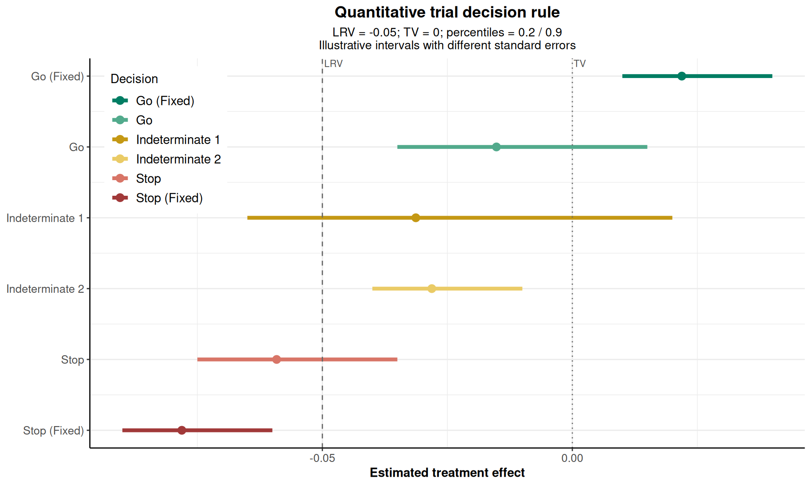
Supply estimates and standardErrors together to classify normally approximated intervals. labels supplies one character label per estimate. This example uses the continuous-endpoint rule’s reference values and percentiles.
Type 2: Normal decision regions
This plot shows decisions against the observed effect estimate and standard error, rather than the true effects used in OC plots. effectRange and standardErrorRange are increasing pairs. gridSize is the number of evaluated values on each axis (2 to 1000, default 200). Optional estimates and standard errors overlay points.
Type 3: Binary event-count maps and interval methods
The Kestrel event-count map above illustrates type 3. Four interval methods are supported by both this plot and the Rates constructor:
intervalMethod |
Construction |
|---|---|
"qtd1" |
Original QTD1 approximation using Wilson score limits rounded to four decimal places in its variance construction |
"farringtonManning" |
Risk-difference score-test inversion using constrained maximum-likelihood variance |
"miettinenNurminen" |
Score inversion with variance correction , where |
"newcombe" |
Square-and-add combination of unrounded Wilson limits without continuity correction |
QTD1 requires lowerPercentile <= 0.5 <= upperPercentile. The other methods allow ordered percentiles anywhere in , including both on the same side of 0.5. They use the lower-tail construction below 0.5, the upper-tail construction above 0.5, and the observed difference at 0.5. See the methodological references below.
This comparison uses additional illustrative sample sizes of 25 per group to keep calculation of all four maps economical.
intervalMethods <- c("qtd1", "farringtonManning", "miettinenNurminen", "newcombe")
methodPlots <- lapply(intervalMethods, function(method) {
return(plot(binaryRule, type = 3, numberOfSubjects = c(25, 25),
directionUpper = FALSE, intervalMethod = method, plotCat = 6))
})
combinedMap <- methodPlots[[1]]
combinedMap$data <- do.call(rbind, lapply(methodPlots, function(p) {
return(p$data)
}))
combinedMap$data$intervalMethod <- factor(combinedMap$data$intervalMethod, levels = intervalMethods)
combinedMap + facet_wrap(~intervalMethod, ncol = 2) +
labs(subtitle = "LRV = -0.05; TV = 0; percentiles = 0.2 / 0.9; C/T = 25/25; lower treatment rates are beneficial")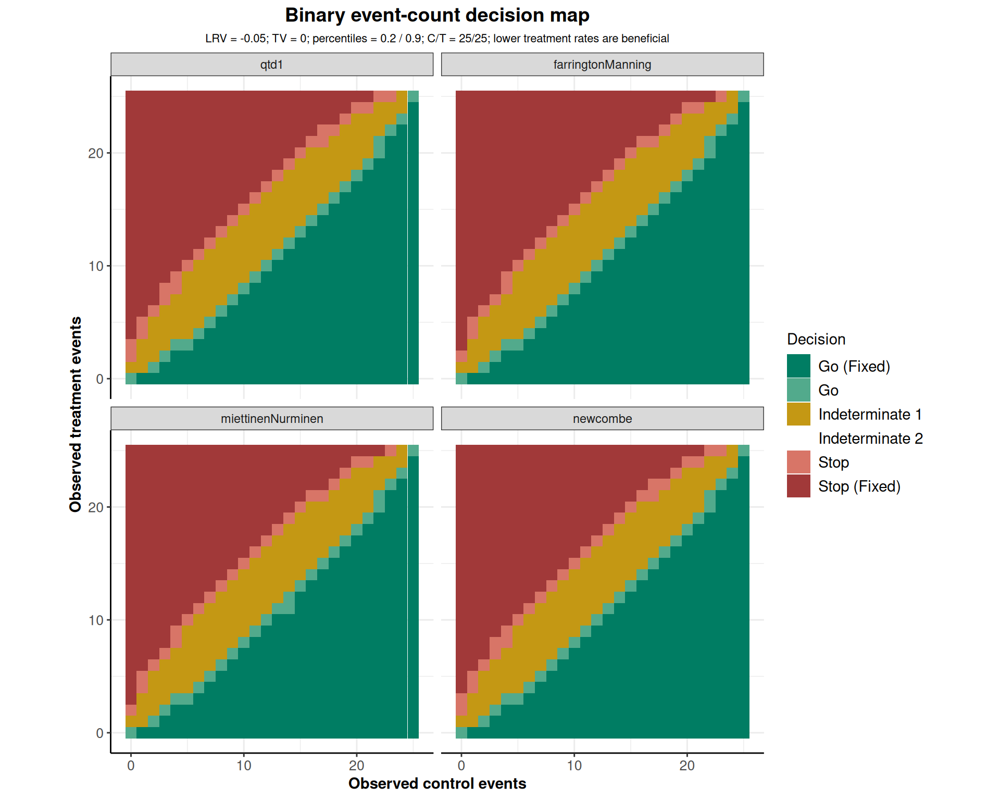
Maps contain at most one million cells, including zero-event rows and columns. Interval methods can classify boundary count pairs differently and change the OC probabilities. To use another method throughout an OC analysis, specify it in the constructor:
scoreRates <- getOperatingCharcteristicsRates(
design = binaryRule,
numberOfSubjects = matrix(c(25, 25), ncol = 2),
pi1 = c(0.10, 0.15, 0.20),
pi2 = 0.15,
directionUpper = FALSE,
intervalMethod = "miettinenNurminen"
)
summary(scoreRates)Operating-characteristics for comparing rates
Decision rule
- Target value: 0
- Lower reference value: -0.050
- Upper percentile: 0.9000
- Lower percentile: 0.2000
Assumptions
- Treatment groups: 2
- Assumed control rate: 0.1500
- Direction upper: FALSE
- Interval method: miettinenNurminen
Number of subjects (control = 25, treatment = 25)
| Assumed treatment rate | Alternatives | Go (Fixed) | Go | Indeterminate 1 | Indeterminate 2 | Stop | Stop (Fixed) | |
|---|---|---|---|---|---|---|---|---|
| 1 | 0.1000 | 0.050 | 0.4081 | 0.1903 | 0.3632 | 0 | 0.0259 | 0.0125 |
| 2 | 0.1500 | 0.000 | 0.2131 | 0.1555 | 0.5289 | 0 | 0.0602 | 0.0423 |
| 3 | 0.2000 | -0.050 | 0.1003 | 0.0986 | 0.5906 | 0 | 0.1022 | 0.1083 |
higherIsBetter <- getOperatingCharcteristicsRates(
design = getDesignQuantitative(targetValue = 0.10, lowerReferenceValue = 0),
numberOfSubjects = matrix(c(25, 25), ncol = 2),
pi1 = c(0.15, 0.25, 0.35),
pi2 = 0.15,
directionUpper = TRUE,
intervalMethod = "newcombe"
)
summary(higherIsBetter)Operating-characteristics for comparing rates
Decision rule
- Target value: 0.100
- Lower reference value: 0
- Upper percentile: 0.9000
- Lower percentile: 0.2000
Assumptions
- Treatment groups: 2
- Assumed control rate: 0.1500
- Direction upper: TRUE
- Interval method: newcombe
Number of subjects (control = 25, treatment = 25)
| Assumed treatment rate | Alternatives | Go (Fixed) | Go | Indeterminate 1 | Indeterminate 2 | Stop | Stop (Fixed) | |
|---|---|---|---|---|---|---|---|---|
| 1 | 0.1500 | 0 | 0.0386 | 0.1745 | 0.4126 | 0 | 0.2718 | 0.1025 |
| 2 | 0.2500 | 0.100 | 0.2135 | 0.3103 | 0.3799 | 0 | 0.0803 | 0.0160 |
| 3 | 0.3500 | 0.200 | 0.4988 | 0.3058 | 0.1789 | 0 | 0.0149 | 0.0017 |
The second example illustrates a beneficial response rather than a harmful event. Its reference values concern pi1 - pi2.
Plots of Operating Characteristics
All six OC plot types support both endpoints. Their numbers refer to the OC object rather than the decision-rule object.
getAvailablePlotTypes(meansOC, output = "numcap")$`1`
[1] "Operating characteristics"
$`2`
[1] "Stacked decision probabilities"
$`3`
[1] "Decision probabilities by sample size"
$`4`
[1] "Selected effect scenarios"
$`5`
[1] "Sensitivity of decision probabilities"
$`6`
[1] "Desired and observed decisions"
getAvailablePlotTypes(ratesOC, output = "caption")[1] "Operating characteristics" "Stacked decision probabilities"
[3] "Decision probabilities by sample size" "Selected effect scenarios"
[5] "Sensitivity of decision probabilities" "Desired and observed decisions" type |
Display | Main additional arguments |
|---|---|---|
| 1 | OC curves |
plotCat, alternatives or pi1, plotPointsEnabled, xAxis
|
| 2 | Stacked probabilities |
plotCat, alternatives or pi1, xAxis
|
| 3 | Probabilities versus total sample size | Selected effects, multiple sample sizes |
| 4 | Selected effect scenarios |
alternatives or pi1
|
| 5 | Sensitivity heatmap |
sensitivity, category, contourLevels, stDev or pi2
|
| 6 | Desired versus observed decisions |
weights, desiredDecisions, selected effects |
alternatives selects already calculated effects. For Rates, pi1 instead selects treatment rates; supply only one selection argument. Rates selections through alternatives refer to beneficial effects at the original control rate. When pi2 is varied, the corresponding treatment rates stay fixed and their risk differences change with the control rate.
Type 1: Operating-characteristics curves
The binary plot compares the two sample-size scenarios, with treatment-rate range 0.10–0.25 and reference rates 0.15 and 0.20 corresponding to TV and LRV.
plot(ratesOC, type = 1, plotCat = 3, plotPointsEnabled = FALSE,
main = "Kestrel: binary operating characteristics")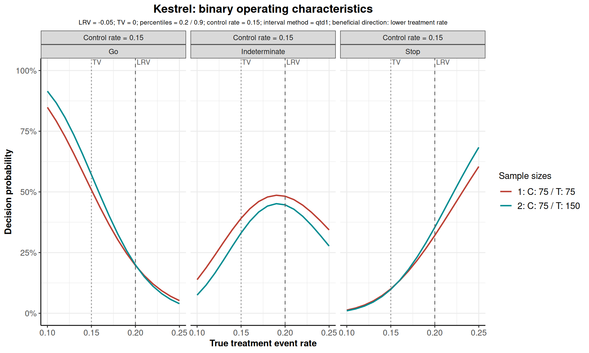
Rates defaults to xAxis = "treatmentRate"; "effect" shows beneficial risk difference. Reference lines are transformed separately for each control-rate panel. Unattainable reference rates outside are omitted.
plot(ratesOC, type = 1, xAxis = "effect", plotCat = 6,
plotPointsEnabled = FALSE)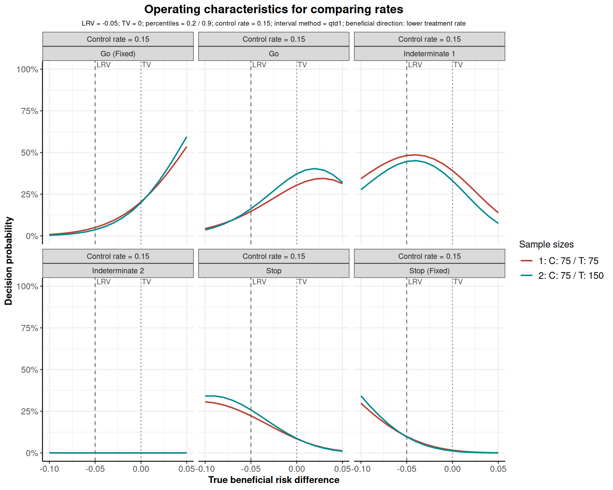
Means uses the true mean difference. By default plotPointsEnabled = NA adds points for grids of at most ten distinct effects. TRUE and FALSE override this behavior for OC curves.
Type 2: Stacked decision probabilities
Stacked plots show the composition of probabilities for each sample-size scenario. Areas interpolate linearly between supplied grid points without calculating additional effects; use a sufficiently dense grid for a smooth display.
Type 3: Decision probabilities by sample size
This plot needs multiple total sample sizes. Allocation ratios are separated so that different treatment-to-control allocations are not joined into one curve. The Kestrel binary example has only one total N for each allocation ratio. For meaningful sample-size curves we use the additional planningSizes grid.
ratesPlanning <- getOperatingCharcteristicsRates(
design = binaryRule,
numberOfSubjects = planningSizes,
pi1 = seq(0.10, 0.25, by = 0.005),
pi2 = 0.15,
directionUpper = FALSE
)
plot(meansOC, type = 3, alternatives = c(0, 2.9, 4, 6))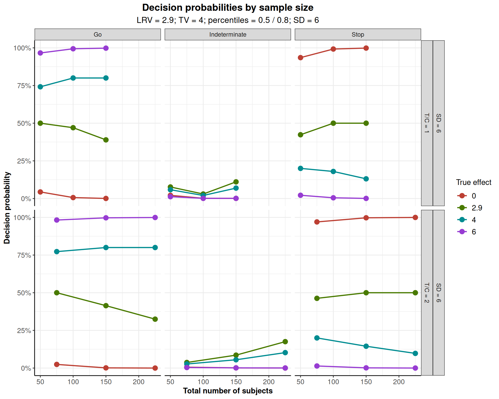
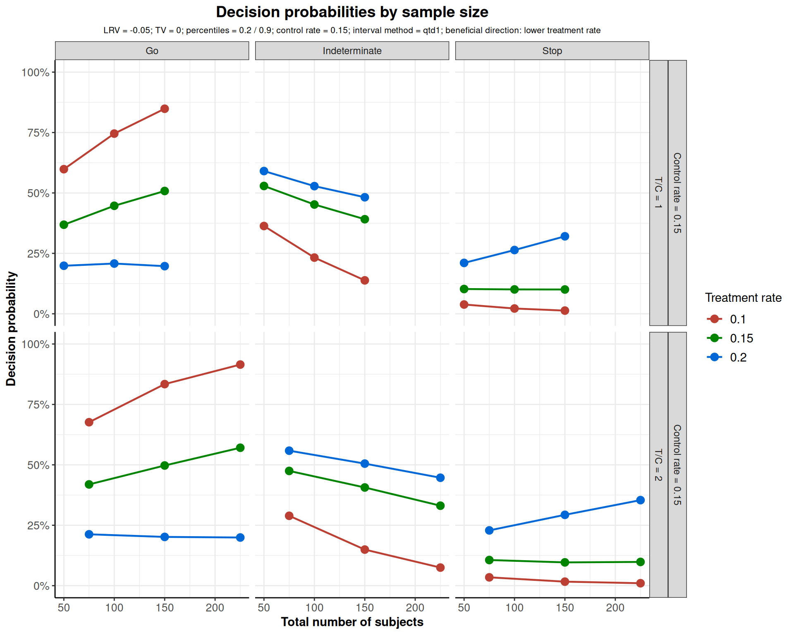
Type 4: Selected effect scenarios
This plot compares actual grid points as discrete scenarios without interpolation. Types 3 and 4 always show points, independently of plotPointsEnabled.
Type 5: Sensitivity of decision probabilities
Sensitivity plots show one category, default "Go". With plotCat = 3, choose Go, Indeterminate, or Stop; with plotCat = 6, use a detailed category name. Data must form a rectangular grid with at least two coordinates on each axis. Maps use evaluated combinations and do not extrapolate to missing scenarios.
Sample-size sensitivity
sensitivity = "sampleSize" is the default. It varies effect or treatment rate and total sample size, separately by allocation ratio and endpoint assumption. contourLevels optionally supplies probabilities in for contours.
plot(meansOC, type = 5, sensitivity = "sampleSize", category = "Go",
contourLevels = c(0.2, 0.5, 0.8))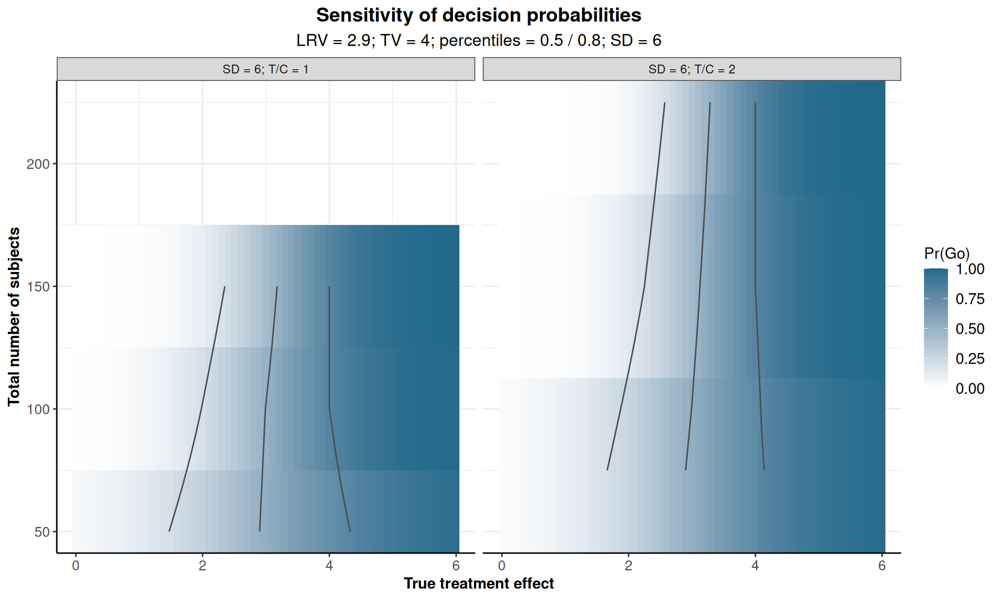
plot(ratesPlanning, type = 5, sensitivity = "sampleSize", category = "Indeterminate")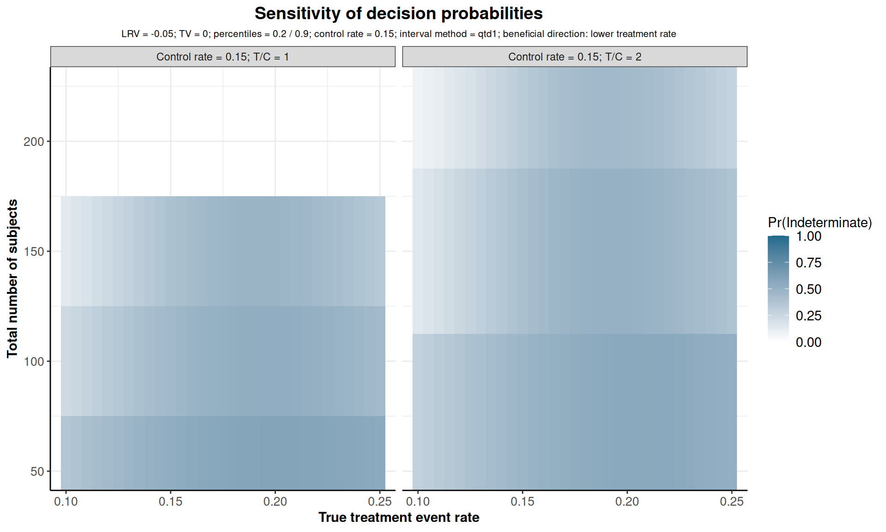
Standard-deviation sensitivity for Means
A positive stDev vector recalculates OC probabilities using the normal calculation. sensitivity = "stDev" places these values on the vertical axis. stDev can also create assumption panels for the other OC types. Recalculation for plotting does not replace the stored probabilities.
Control-rate sensitivity for Rates
sensitivity = "pi2" and a pi2 vector recalculate probabilities for different true control rates using the stored interval method and direction. This map always uses treatment and control rates as axes. Treatment rates stay fixed. stDev applies only to Means and pi2 only to Rates.
Allocation sensitivity
Allocation maps require one selected effect and a complete grid of control and treatment sample sizes. The additional grid below varies both arms independently.
allocationSizes <- as.matrix(expand.grid(control = c(25, 75), treatment = c(25, 75)))
meansAllocation <- getOperatingCharcteristicsMeans(
design = meansRule,
numberOfSubjects = allocationSizes,
alternative = 4,
stDev = 6
)
ratesAllocation <- getOperatingCharcteristicsRates(
design = binaryRule,
numberOfSubjects = allocationSizes,
pi1 = 0.15,
pi2 = 0.15,
directionUpper = FALSE
)
plot(meansAllocation, type = 5, sensitivity = "allocation", category = "Go")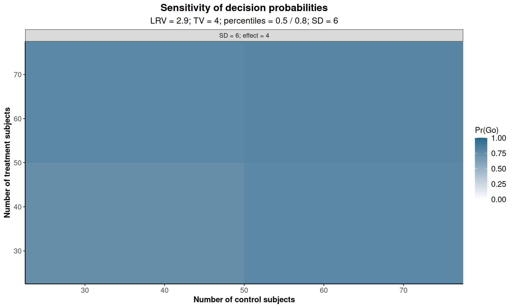
plot(ratesAllocation, type = 5, sensitivity = "allocation", category = "Stop")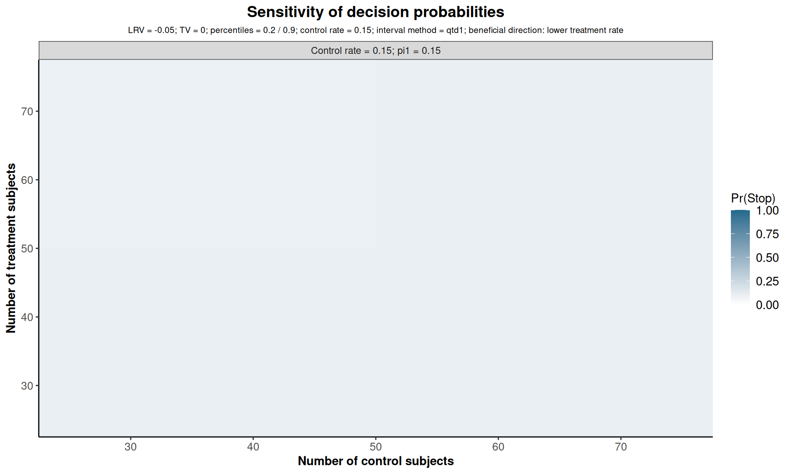
Type 6: Desired and observed decisions
This display needs an explicit distribution over selected true-effect scenarios. Supply one nonnegative entry per effect through weights, summing to one, and one desired decision ("Go", "Indeterminate", or "Stop") through desiredDecisions. Both follow selection order. These are additional decision-analysis assumptions, not estimates supplied by the trial.
Each cell is a joint probability: conditional decision probabilities multiplied by scenario weights and summed over scenarios. Matching desired and observed decisions count as correct under this definition. Indeterminate remains separate and is not treated as Stop. These are neither conventional type-I/type-II error rates nor posterior probabilities. Each panel reports its probability of a correct decision under the supplied definition.
meansPerformance <- plot(
meansOC,
type = 6,
alternatives = c(0, 2.9, 4, 6),
weights = c(0.25, 0.25, 0.25, 0.25),
desiredDecisions = c("Stop", "Indeterminate", "Go", "Go")
)
meansPerformance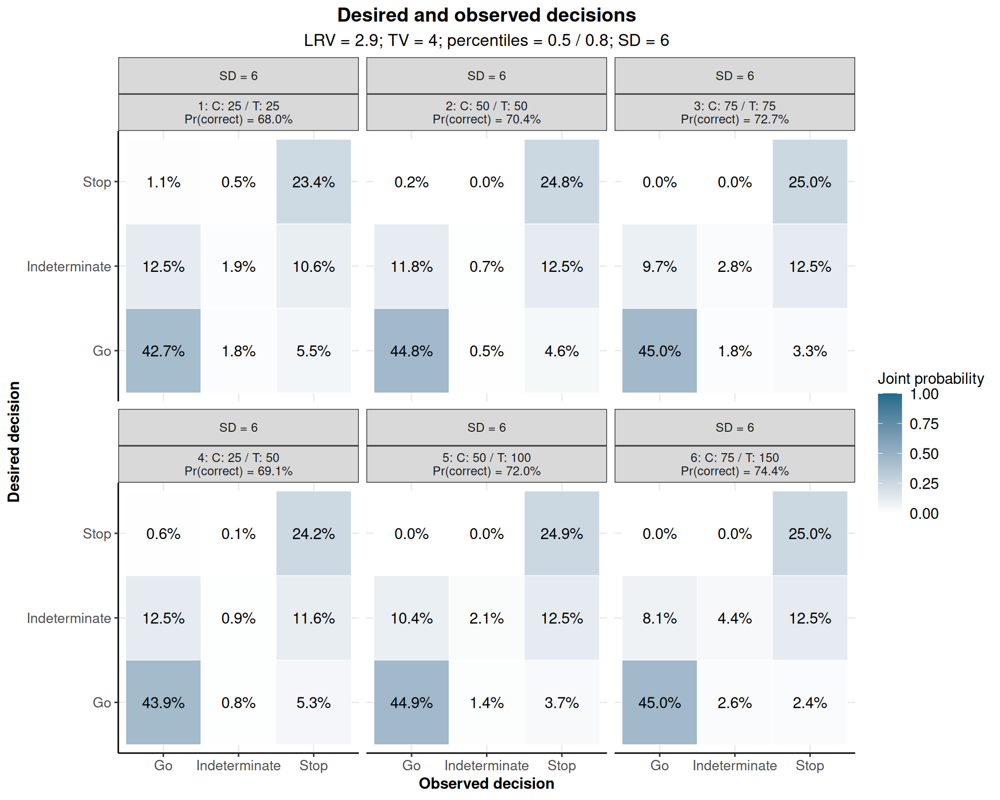
ratesPerformance <- plot(
ratesScenarios,
type = 6,
pi1 = scenarioRates,
weights = c(0.2, 0.2, 0.2, 0.2, 0.2),
desiredDecisions = c("Go", "Go", "Indeterminate", "Stop", "Stop")
)
ratesPerformance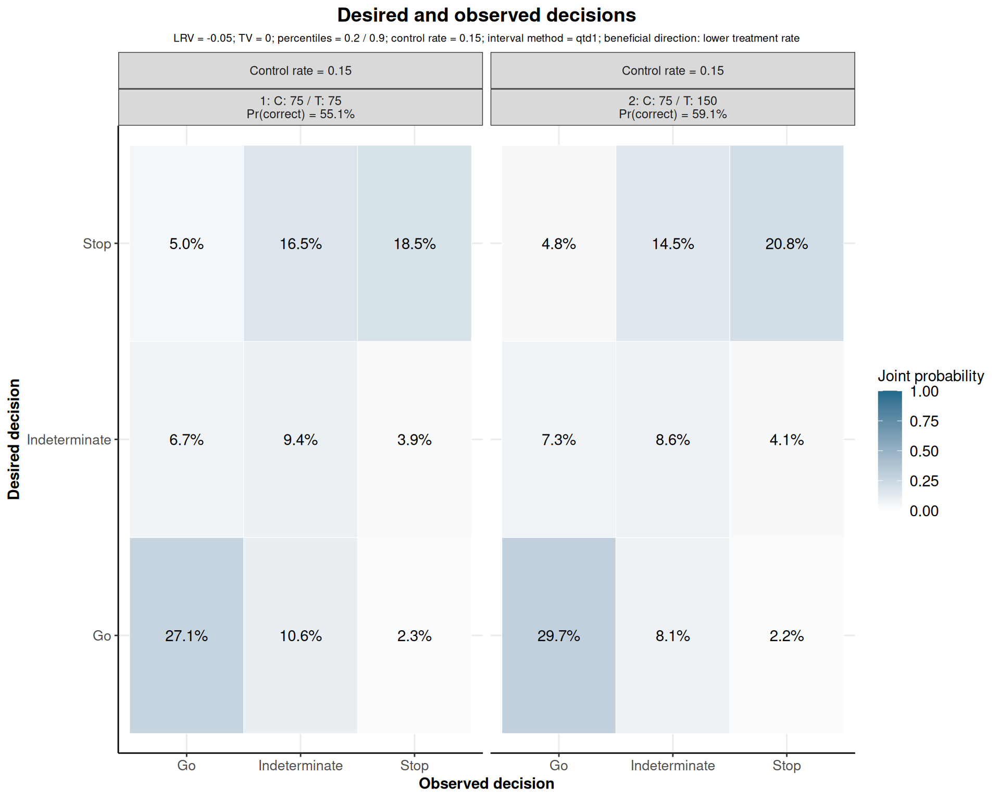
The data include desiredDecision, observedDecision, and correct. The qtdEffectDistribution attribute records the exact effect distribution and desired decisions. For Rates it identifies scenarios by pi1. If several pi2 values are supplied, the same distribution over treatment rates and desired decisions applies separately to each control-rate panel.
attr(ratesPerformance, "qtdEffectDistribution") pi1 weight desiredDecision
1 0.100 0.2 Go
2 0.150 0.2 Go
3 0.175 0.2 Indeterminate
4 0.200 0.2 Stop
5 0.250 0.2 Stop desiredDecision observedDecision probability correct
1 Go Go 0.27131700 TRUE
2 Indeterminate Go 0.06669772 FALSE
3 Stop Go 0.04985922 FALSE
4 Go Indeterminate 0.10593021 FALSE
5 Indeterminate Indeterminate 0.09422735 TRUE
6 Stop Indeterminate 0.16511834 FALSEPlot Appearance, Source Data, and Exports
All QTD plots accept main, xlab, ylab, palette, legendPosition, plotSettings, and showSource. With palette = NULL, decision categories use semantic colors and sample-size curves use the rpact hue palette. Sensitivity and performance use a continuous probability scale. The default legend position is "auto"; standard positions such as "bottom" and "none" are also supported.
kestrelPlot <- plot(
ratesOC,
type = 1,
plotCat = 3,
plotPointsEnabled = FALSE,
main = "Kestrel: probability of each development decision",
xlab = "True composite efficacy failure probability on treatment",
ylab = "Probability",
palette = "Set1",
legendPosition = "bottom",
plotSettings = getPlotSettings(
lineSize = 1,
pointSize = 2,
mainTitleFontSize = 14,
axesTextFontSize = 10,
legendFontSize = 10
)
)
kestrelPlot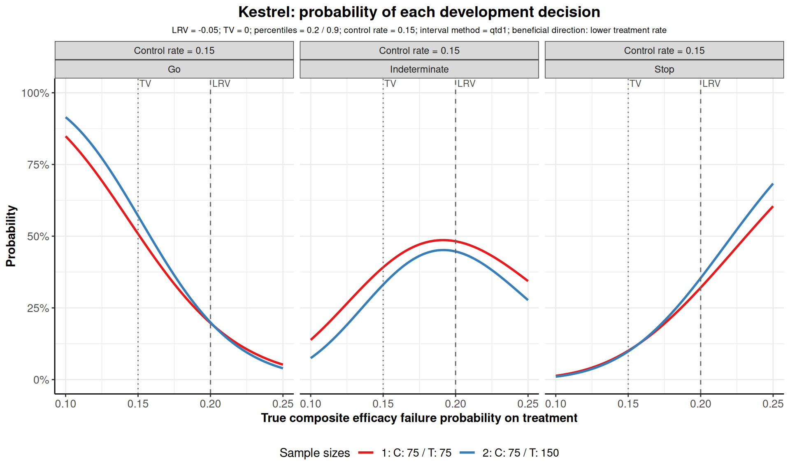
Results are ggplot objects supporting additional ggplot2 layers and themes. data contains the unrounded plot data. showSource = TRUE also prints them; a compact scenario object keeps this output manageable.
sourcePlot <- plot(ratesScenarios, type = 4, showSource = TRUE)Source data of the QTD plot:
category scenario effectIndex nControl nTreatment alternative pi2 pi1 probability sampleSize
1 Go 1 1 75 75 0.050 0.15 0.100 0.84845594 C: 75 / T: 75
2 Indeterminate 1 1 75 75 0.050 0.15 0.100 0.13835067 C: 75 / T: 75
3 Stop 1 1 75 75 0.050 0.15 0.100 0.01319339 C: 75 / T: 75
4 Go 2 1 75 150 0.050 0.15 0.100 0.91493290 C: 75 / T: 150
5 Indeterminate 2 1 75 150 0.050 0.15 0.100 0.07488037 C: 75 / T: 150
6 Stop 2 1 75 150 0.050 0.15 0.100 0.01018674 C: 75 / T: 150
7 Go 1 2 75 75 0.000 0.15 0.150 0.50812904 C: 75 / T: 75
8 Indeterminate 1 2 75 75 0.000 0.15 0.150 0.39130040 C: 75 / T: 75
9 Stop 1 2 75 75 0.000 0.15 0.150 0.10057056 C: 75 / T: 75
10 Go 2 2 75 150 0.000 0.15 0.150 0.57074458 C: 75 / T: 150
11 Indeterminate 2 2 75 150 0.000 0.15 0.150 0.33094646 C: 75 / T: 150
12 Stop 2 2 75 150 0.000 0.15 0.150 0.09830897 C: 75 / T: 150
13 Go 1 3 75 75 -0.025 0.15 0.175 0.33348862 C: 75 / T: 75
14 Indeterminate 1 3 75 75 -0.025 0.15 0.175 0.47113675 C: 75 / T: 75
15 Stop 1 3 75 75 -0.025 0.15 0.175 0.19537463 C: 75 / T: 75
16 Go 2 3 75 150 -0.025 0.15 0.175 0.36370879 C: 75 / T: 150
17 Indeterminate 2 3 75 150 -0.025 0.15 0.175 0.43117184 C: 75 / T: 150
18 Stop 2 3 75 150 -0.025 0.15 0.175 0.20511938 C: 75 / T: 150
19 Go 1 4 75 75 -0.050 0.15 0.200 0.19714998 C: 75 / T: 75
20 Indeterminate 1 4 75 75 -0.050 0.15 0.200 0.48221454 C: 75 / T: 75
21 Stop 1 4 75 75 -0.050 0.15 0.200 0.32063548 C: 75 / T: 75
22 Go 2 4 75 150 -0.050 0.15 0.200 0.19931900 C: 75 / T: 150
23 Indeterminate 2 4 75 150 -0.050 0.15 0.200 0.44664640 C: 75 / T: 150
24 Stop 2 4 75 150 -0.050 0.15 0.200 0.35403460 C: 75 / T: 150
25 Go 1 5 75 75 -0.100 0.15 0.250 0.05214613 C: 75 / T: 75
26 Indeterminate 1 5 75 75 -0.100 0.15 0.250 0.34337718 C: 75 / T: 75
27 Stop 1 5 75 75 -0.100 0.15 0.250 0.60447670 C: 75 / T: 75
28 Go 2 5 75 150 -0.100 0.15 0.250 0.03945968 C: 75 / T: 150
29 Indeterminate 2 5 75 150 -0.100 0.15 0.250 0.27700912 C: 75 / T: 150
30 Stop 2 5 75 150 -0.100 0.15 0.250 0.68353120 C: 75 / T: 150
scenarioLabel totalSubjects allocationRatio effectLabel
1 1: C: 75 / T: 75 150 1 0.1
2 1: C: 75 / T: 75 150 1 0.1
3 1: C: 75 / T: 75 150 1 0.1
4 2: C: 75 / T: 150 225 2 0.1
5 2: C: 75 / T: 150 225 2 0.1
6 2: C: 75 / T: 150 225 2 0.1
7 1: C: 75 / T: 75 150 1 0.15
8 1: C: 75 / T: 75 150 1 0.15
9 1: C: 75 / T: 75 150 1 0.15
10 2: C: 75 / T: 150 225 2 0.15
11 2: C: 75 / T: 150 225 2 0.15
12 2: C: 75 / T: 150 225 2 0.15
13 1: C: 75 / T: 75 150 1 0.175
14 1: C: 75 / T: 75 150 1 0.175
15 1: C: 75 / T: 75 150 1 0.175
16 2: C: 75 / T: 150 225 2 0.175
17 2: C: 75 / T: 150 225 2 0.175
18 2: C: 75 / T: 150 225 2 0.175
19 1: C: 75 / T: 75 150 1 0.2
20 1: C: 75 / T: 75 150 1 0.2
21 1: C: 75 / T: 75 150 1 0.2
22 2: C: 75 / T: 150 225 2 0.2
23 2: C: 75 / T: 150 225 2 0.2
24 2: C: 75 / T: 150 225 2 0.2
25 1: C: 75 / T: 75 150 1 0.25
26 1: C: 75 / T: 75 150 1 0.25
27 1: C: 75 / T: 75 150 1 0.25
28 2: C: 75 / T: 150 225 2 0.25
29 2: C: 75 / T: 150 225 2 0.25
30 2: C: 75 / T: 150 225 2 0.25
head(sourcePlot$data) category scenario effectIndex nControl nTreatment alternative pi2 pi1 probability sampleSize
1 Go 1 1 75 75 0.05 0.15 0.1 0.84845594 C: 75 / T: 75
2 Indeterminate 1 1 75 75 0.05 0.15 0.1 0.13835067 C: 75 / T: 75
3 Stop 1 1 75 75 0.05 0.15 0.1 0.01319339 C: 75 / T: 75
4 Go 2 1 75 150 0.05 0.15 0.1 0.91493290 C: 75 / T: 150
5 Indeterminate 2 1 75 150 0.05 0.15 0.1 0.07488037 C: 75 / T: 150
6 Stop 2 1 75 150 0.05 0.15 0.1 0.01018674 C: 75 / T: 150
scenarioLabel totalSubjects allocationRatio effectLabel
1 1: C: 75 / T: 75 150 1 0.1
2 1: C: 75 / T: 75 150 1 0.1
3 1: C: 75 / T: 75 150 1 0.1
4 2: C: 75 / T: 150 225 2 0.1
5 2: C: 75 / T: 150 225 2 0.1
6 2: C: 75 / T: 150 225 2 0.1Plots can be saved as PNG files, and full probability data and compact summary tables can be exported as CSV files. The following code illustrates this workflow with explicit filenames and table contents. This optional export code is not executed when rendering the vignette.
ggplot2::ggsave("kestrel_plot.png", kestrelPlot, width = 10, height = 6, dpi = 300)
utils::write.csv(ratesOC$probabilities, "kestrel_data.csv", row.names = FALSE)
utils::write.csv(scenarioTable, "kestrel_table.csv", row.names = FALSE)
writeLines(as.character(print(summary(ratesScenarios), markdown = TRUE)), "kestrel_summary.md")References
- Farrington, C. P. and Manning, G. (1990). Test statistics and sample size formulae for comparative binomial trials with null hypothesis of non-zero risk difference or non-unity relative risk. Statistics in Medicine, 9, 1447–1454. doi:10.1002/sim.4780091208.
- Miettinen, O. and Nurminen, M. (1985). Comparative analysis of two rates. Statistics in Medicine, 4, 213–226. doi:10.1002/sim.4780040211.
- Newcombe, R. G. (1998). Interval estimation for the difference between independent proportions: comparison of eleven methods. Statistics in Medicine, 17, 873–890. Publication link.
- Armitage, P. (1989). Inference and decision in clinical trials. Journal of Clinical Epidemiology, 42, 293–299.
- Spiegelhalter, D. J., Abrams, K. R., and Myles, J. P. (2004). Bayesian Approaches to Clinical Trials and Health-Care Evaluation. Wiley, Section 6.3. Background reading on Bayesian decision making; the implemented calculations above use frequentist interval constructions.